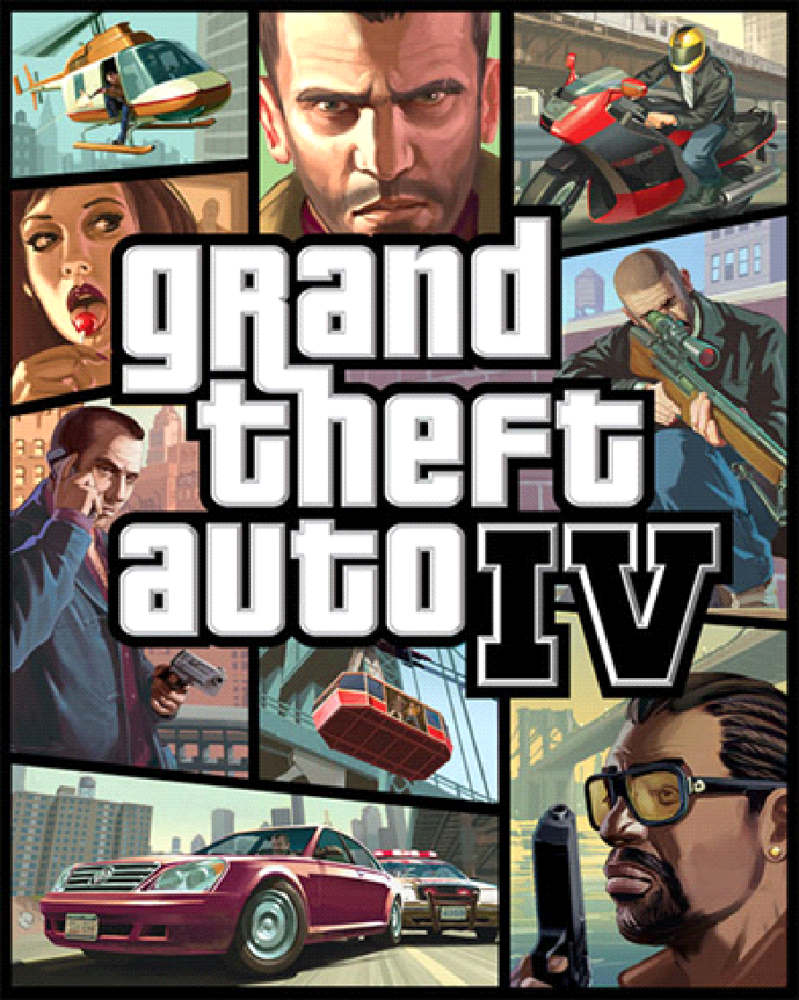

GTA IV (2008)

Grand Theft Auto IV é foi lançado em 2008 para PlayStation 3, Xbox 360 e PC. O jogo é ambientado em 2008 em
Liberty City, uma cidade fictícia baseada em Nova York.
O jogador controla o personagem principal Niko Bellic, um imigrante ilegal da Europa Oriental que viaja para
Liberty City para se reunir com o primo Roman, que mentiu sobre sua vida de luxo na cidade. Niko se envolve em uma
série de conflitos e problemas com outras gangues e figuras do crime em Liberty City enquanto tenta descobrir a
verdade sobre o passado do primo e se vingar de pessoas que o prejudicaram no passado.
Como outros títulos da série Grand Theft Auto, GTA IV oferece uma jogabilidade aberta que permite ao jogador
explorar a cidade e realizar uma ampla variedade de atividades, incluindo roubar carros, participar de missões de
rápido fogo e cometendo crimes. O jogo também introduziu um sistema de relacionamentos, que permite ao jogador
cultivar amizades e relacionamentos românticos com personagens no jogo.
GTA IV foi recebido com elogios pela crítica e tornou-se um sucesso de vendas, vendendo mais de 25 milhões de
cópias em todo o mundo. Ele foi seguido por Grand Theft Auto: Chinatown Wars, que foi lançado em 2009 para
Nintendo DS, PlayStation Portable, iOS e Android.
Lançado em 2008 para PS3, Xbox360 e Windows.
|
|
|